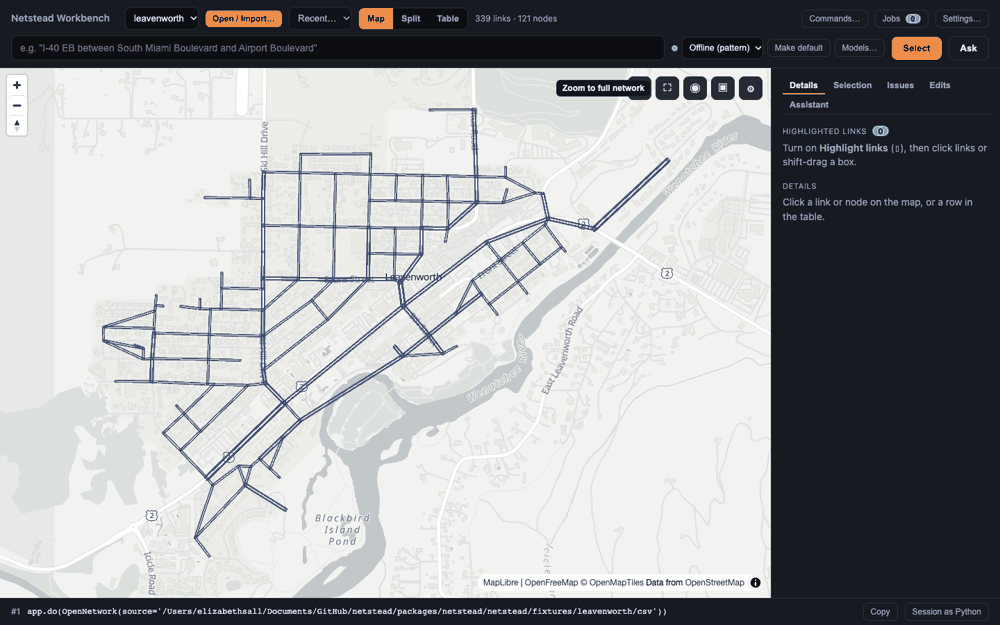
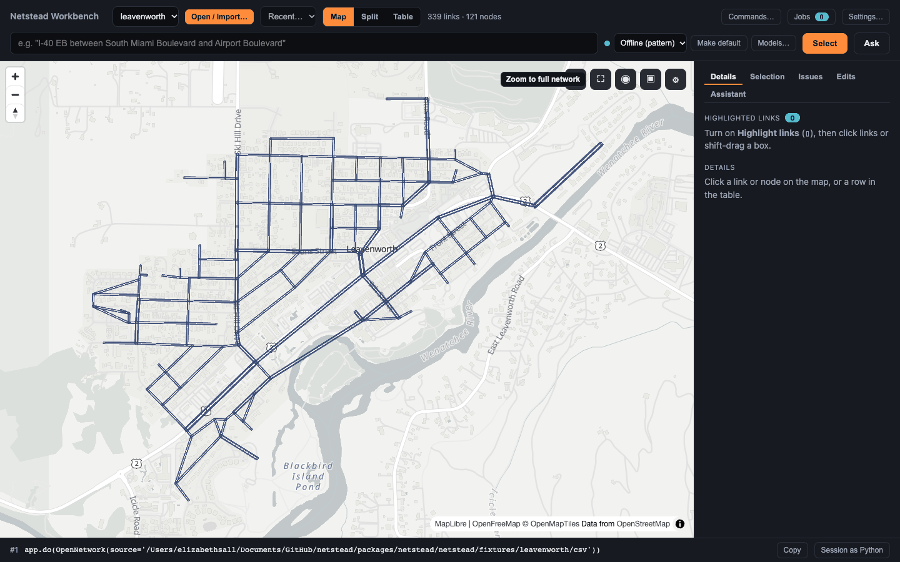
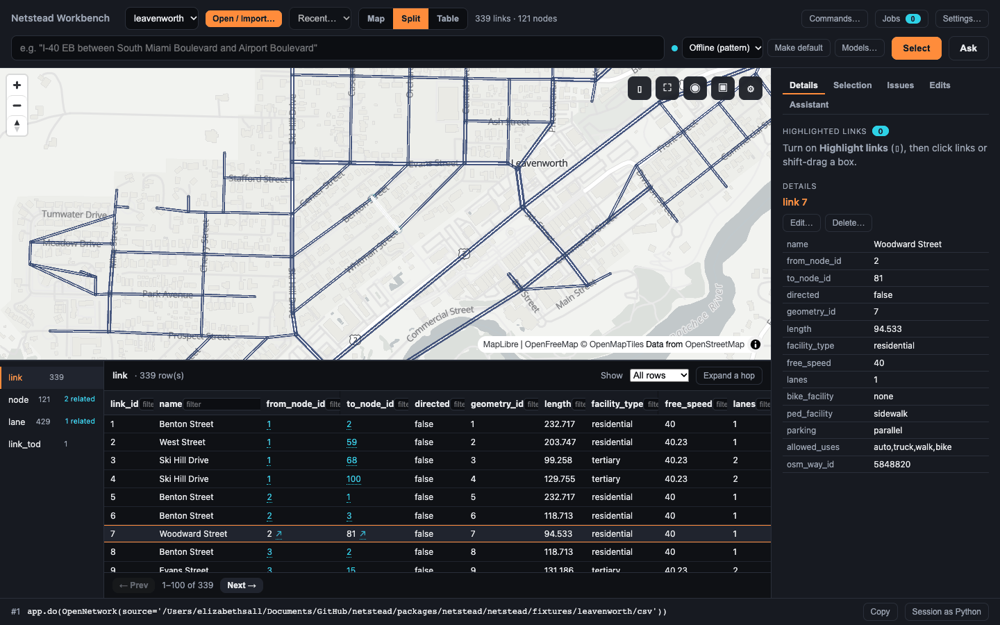
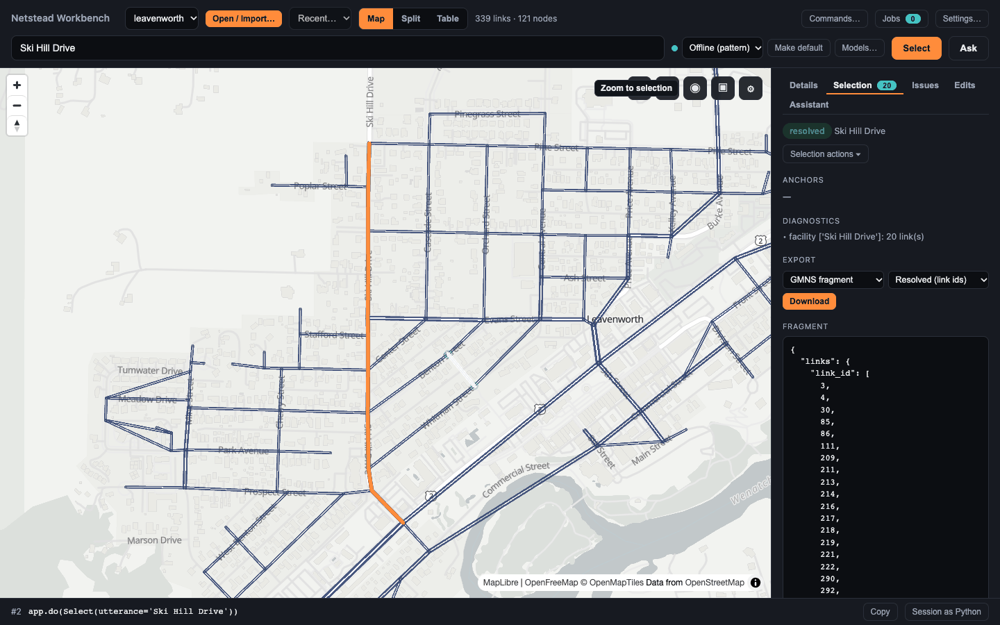
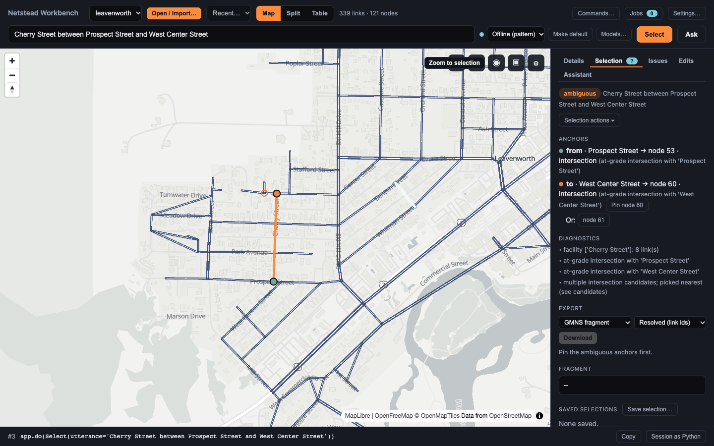
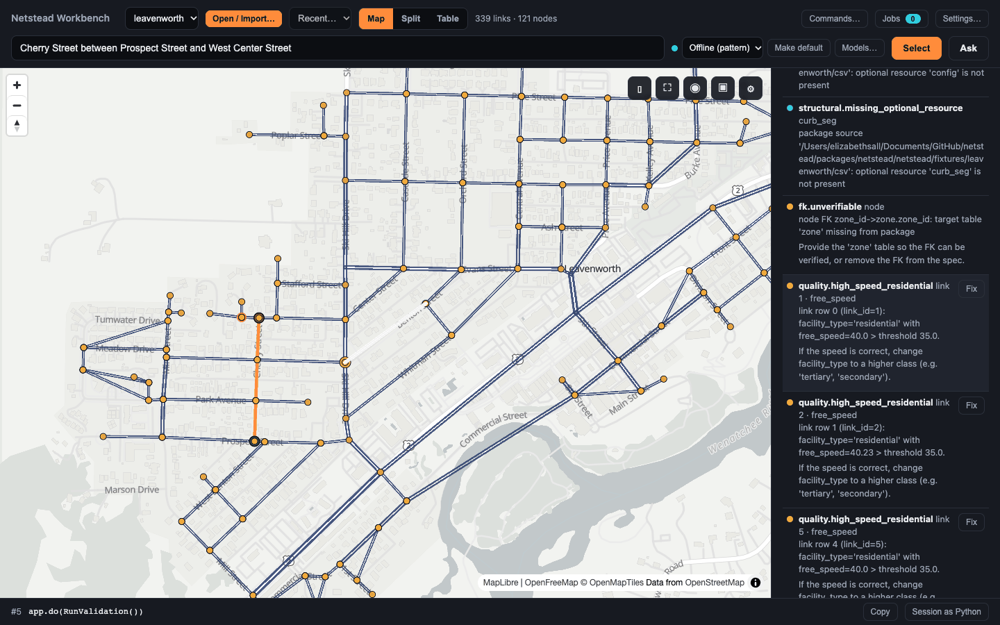
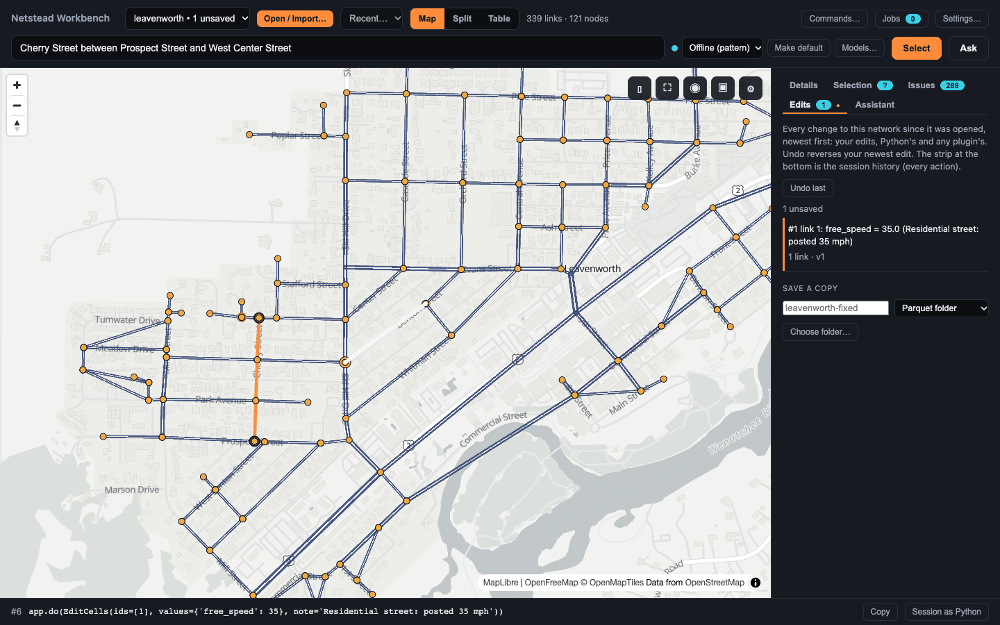
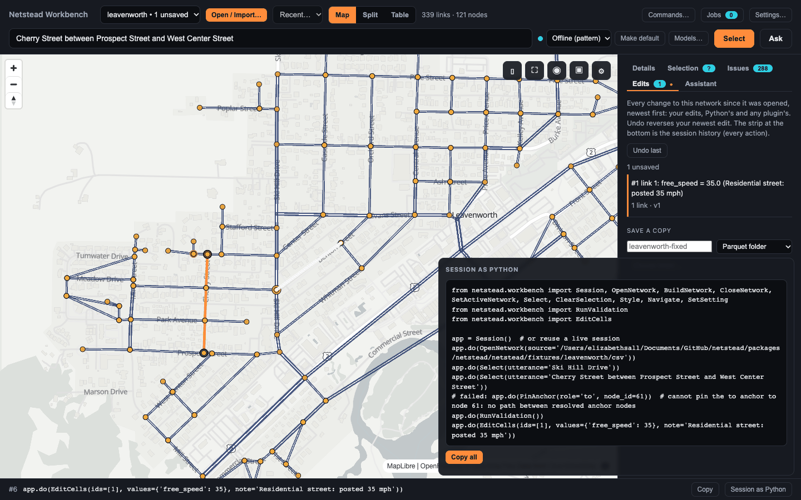
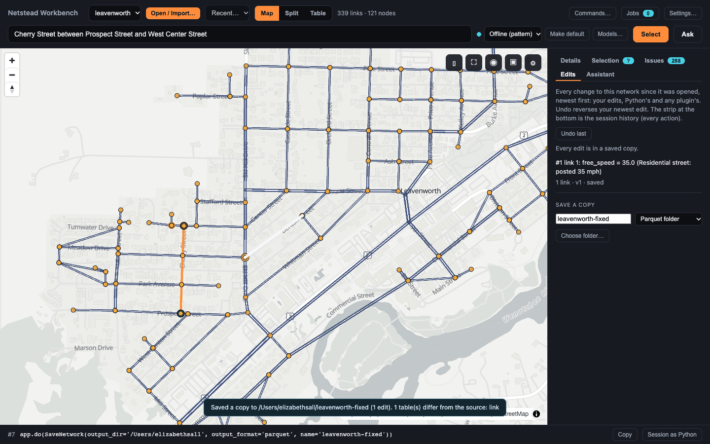

Visual tour ¶
This is the Workbench quickstart told slowly: the same eight steps on the same bundled network, but with the emphasis on what you are looking at, what netstead is doing underneath, and why it matters for a real network. The notebook version of this tour, with maps and report cards rendered from Python, is the Python tour.
What you’ll build ¶


By the end you will be able to read the Workbench the way a modeler reads it: a GMNS network on a map, its tables beside it, a selection with a status you can trust, a validation report whose severities mean something, an edit log with versions, and a script that reproduces all of it.
Prerequisites ¶
Follow step 1 of the Workbench quickstart to install
netstead with the [server,graph,nl] extras and open the Leavenworth fixture with --provider stub. This
page doesn’t repeat the commands; if the install or the first run fails, see
Install and troubleshoot.
Steps ¶
1. A GMNS network on a map ¶
link, node and geometry tables. (screenshot predates the panel restructure)

What you see is a small, real street network: downtown Leavenworth, an OSM-derived grid about 2 km across,
with Highway 2 along the south and residential streets fanning north. The header says what it is made of:
339 links · 121 nodes. In GMNS a node is a point (an intersection, a dead end, a change of attributes)
and a link is a directed edge between two nodes with the attributes a model needs: facility_type,
lanes, free_speed, capacity, directed. Each link’s shape comes from the geometry table, keyed by
geometry_id, which is why a link can bend without extra nodes.
Why it matters: everything else in the Workbench is a view of those tables. The map is not a separate GIS
layer that can drift from the data; it is drawn from the link rows you are about to edit, and it redraws
when they change. If the map opened zoomed out, Zoom to full network fits the view to the network’s
bounding box: the first thing to try whenever the map looks empty.
2. The linked table ¶


Split puts the link table next to the map. The rail on the left of the table lists every table in the
network with its row count: link, node, geometry, lane, link_tod and the rest. Click a link on the
map and three things agree on which record you mean: the map outlines it, the table scrolls to and outlines
its row, and the Inspect tab comes forward and lists its attributes. Click a row and the map flies to it.
What the linked table gives you is the half of a network that a map can’t show. A speed, a lane count, a
time-of-day override or a foreign key are table facts; the map can color by one of them at a time (Find →
View → Color links by), but the table shows them all, sortable and pageable, with the key columns (from_node_id,
geometry_id) as links you can follow into the other tables. Rows a foreign key away from the focused record,
such as the link’s two end nodes or its lanes, are tinted in every table and on the map. GMNS is a relational
spec, and the Workbench treats it as one.
One rule keeps this simple: clicking never changes the selection. The focused record is a view. The selection, next, is the thing the Workbench records and can replay.
3. A selection you can read back ¶
resolved, and the GMNS selection fragment that names them. (screenshot predates the panel restructure)

Type Ski Hill Drive into the Find tab’s box and press Select. The resolver matches the phrase against
the network’s own street names, finds the facility, and marks its 20 links. The Find tab shows three
things worth reading:
- The status,
resolved: the phrase mapped to one unambiguous set of links. Other statuses areambiguous(next step) and the empty result when nothing matched. - The diagnostics: how it got there (
facility ['Ski Hill Drive']: 20 link(s)). - The fragment: a JSON document in the GMNS selection schema, the portable form of the selection. As a
Link list it holds only the
link_ids; as a Segment it keeps the street name and the from/to nodes instead, so another tool, or a later version of this network, can resolve it again. Pick the form and the ID system (GMNS, OpenStreetMap or Overture GERS) under Export, or a ProjectCard facility instead, and use the copy button on the box.
Why it matters: a selection made by name is reproducible in a way a hand-drawn box is not. The strip at the
bottom already shows it as app.do(Select(utterance='Ski Hill Drive')); after an edit, a query selection is
resolved again against the edited network. With --provider stub the phrase is parsed by an offline pattern
matcher; the same box can use a local model through Ollama or a hosted one, and the selection object looks the
same either way.
4. What an ambiguous anchor means ¶
to anchor could be node 60 or node 61. (screenshot predates the panel restructure)

Now select Cherry Street between Prospect Street and West Center Street. A “between” phrase has a facility
(Cherry Street) and two anchors, the cross streets that bound the stretch; each anchor must resolve to one
node on the facility. The from anchor does (Prospect Street → node 53). The to anchor doesn’t: West
Center Street meets Cherry Street at more than one node, so the resolver picks the nearest (node 60) and
reports the status ambiguous, with node 61 listed as the other candidate and both drawn as rings on the
map.
That status is the point. The resolver could have quietly taken its best guess, and three links would have
lit up looking exactly like a confident answer. Instead the selection says it is a guess, the tab badge shows
?, and export is refused until you settle it. Settling it is a pin: click node 61 to choose it, or
Pin node 60 to keep the resolver’s choice. The selection is resolved again, the status becomes resolved,
and the pin becomes part of the selection’s query (app.do(PinAnchor(role='to', node_id=60))), so it survives
an edit and comes back when you reuse a saved selection. Unpin returns to the resolver’s choice.
Real networks are full of this: a cross street that crosses twice, a divided road with two carriageways, a name shared by a street and a ramp. A selection status you can read is what lets you trust the selections you didn’t check by hand.
5. What validation severities mean ¶


Run validation (the play icon in the Validate tab) runs two kinds of check and lists them together, each with a severity:
- error — the network breaks the spec in a way a consumer can’t work around: a required table or field is missing, a value has the wrong type, a foreign key points at a row that doesn’t exist. Leavenworth has none.
- warning — something is wrong or can’t be shown to be right. The spec check finds none on Leavenworth.
The quality rules add 271:
quality.high_speed_residential, a residential link whosefree_speed(40) is above the 35 mph threshold. The spec allows it; the rule says it is probably a coding mistake, and itsfix_hintsays what to do if the speed is right (raise the facility class instead). - info — worth knowing, not wrong: 16
structural.missing_optional_resourcefindings, one per optional GMNS table (movement,segment,signal_*,zone, …) that this network doesn’t include.
The status line sums them: Validated v0: 271 warnings, 16 info, the v0 being the version of the network
that was checked. Spec checks are about whether the file is valid GMNS; quality rules are about whether the
network is plausible, and they are configurable (Settings → Validation, keyed by rule code), so a region
with 40 mph residential streets can raise the threshold instead of silencing the rule.
Each located issue is a dot on the map, colored by severity; click one in the list (or its crosshair “zoom
to” icon) and the map flies to its link, Inspect shows the record, and the table scrolls to the row. Findings
about a whole table, like the missing-resource notes, have no place on the map; findings that share a code and
differ only by resource are grouped into one row under a collapsed Unlocated findings block. The filters
(severity, table, code) carry counts, so quality.high_speed_residential (271) is one click away from being
the only thing in the list.
6. What an edit does to the network ¶


Press Fix on a quality.high_speed_residential issue. The editor opens on that record and that column
(link 1 · free_speed), prefilled with 40, and with the issue as the edit’s note, which you can replace
with your own reason (Residential street: posted 35 mph). Change the value to 35 and press Apply.
Three things happen, and each is visible:
- The network version moves. The network you opened was
v0; it is nowv1. Edits change the network in memory only; nothing on disk is touched until you save a copy, and the source is never overwritten. The version is what the rest of the Workbench keys on: the map and table redraw forv1, the stored validation is marked stale (the network changed since: re-run), and a delete planned onv0would be refused. - The edit log grows. The Edit tab lists
#1 link 1: free_speed = 35.0 (Residential street: posted 35 mph), with the rows it touched (1 link) and the version it produced (v1), and says1 unsaved; the network picker says the same, and the header’s validity light turns amber-outlined. The undo icon reverses the newest edit; undo is last-in, first-out and is itself recorded (app.do(UndoEdit())). A redo icon beside it would reapply that edit (app.do(RedoEdit())) until any other change clears it. - The edited rows are re-checked at once. A value the spec disagrees with, such as a foreign key to a row that doesn’t exist or a required field left empty, is applied anyway and listed under Edit warnings in the Edit tab with its own Fix, so you can put it right where you found it. A speed of 35 raises no warning, so the count stays at 0.
Why it matters: an edit in the Workbench is a typed action with a note, a version and an undo, not a cell changed in a spreadsheet. That is what makes the next two steps possible.
7. What “Session as Python” is for ¶


The strip at the bottom of the window shows the last action as Python; the code icon in the footer (tooltip
“Copy session as Python”) shows the whole session as one script: the imports, app = Session(), and one
app.do(...) line per action, from OpenNetwork(source=...) through Select, PinAnchor, RunValidation,
EditCells and UndoEdit.
It exists because clicking is a bad way to document work. The script is the record of what you did to the
network, in the form a reviewer can read, a colleague can run on the next quarter’s network, and a CI job can
run on every one. A build you approved replays with approved=True; a save replays as a new copy. The one
thing to know before replaying: a folder you trusted on the netstead app command line is not in the script,
so a fresh Session() needs it in io.allowed_roots (see
Every action is replayable).
8. Saving a copy, and what stays the same ¶


The Save icon in the header opens a dialog that writes the network as it is now (v1, with your fix) to
a new folder or file: name it, choose Parquet, CSV, DuckDB or Zip, and pick a folder inside your home
directory with Choose folder… and Use this folder, then Save. The save is a job; when it finishes
a toast says where the copy went and which tables differ from the source, the edit is marked saved in the
Edit tab, and the unsaved badge clears.
What stays the same is the network you opened. The Workbench never writes to its source, local or remote, and never overwrites an existing copy, so an afternoon of edits can’t damage the file you started from. Open warnings are listed and confirmed before a save goes ahead. A Parquet copy opens directly in GeoLibre, QGIS or ArcGIS Pro, and feeds AequilibraE, DTALite and Path4GMNS; see The Workbench and other tools for how to move between them.
Next steps ¶
- Explore networks in the Netstead Workbench — every panel and command, the assistant, settings and language models.
- Validate a network — the four validation passes and the report formats, from the CLI and Python.
- Triage and fix findings — working through a report: filter, fix locally, re-run.
- Python tour (notebook) — the same network rendered as maps and report cards from Python, with a geometry edit and a scoped subgraph.